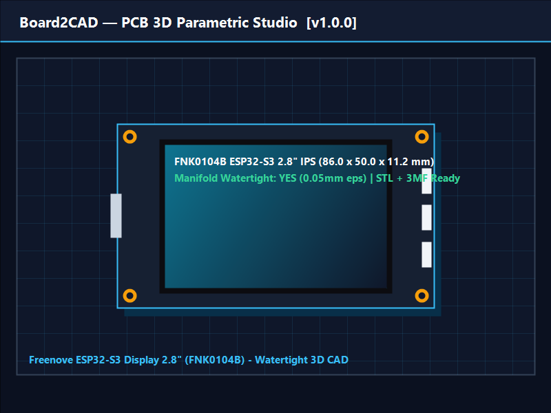

GENERAZIONE ASSISTITA AI VISION & PARAMETRIC ENGINE
Wizard Nuova Scheda 3D
-
1
Foto & Dati Base Immagini PCB e note
-
2
Analisi & Quote Clarification First AI
-
3
OpenSCAD & Mesh Auto-Fix, STL & 3MF
1. Foto della Scheda / Disegno Quotato
Carica o scatta foto della vista frontale, posteriore o scheda tecnica quotata. L'AI estrarrà layout, connettori e proporzioni.
2. Hai già un Codice .SCAD di partenza? (Opzionale)
Incolla o carica un file .scad che possiedi già: potrai compilarlo direttamente oppure chiedere all'AI di apportare modifiche specifiche (quote, componenti, serigrafie, fix manifold).
3. Identificazione, Quote & Modifiche Richieste
Clarification First
Verifica Quote Meccaniche & Componenti Rilevati
Controlla o correggi le misure critiche stimate prima di generare lo script OpenSCAD 100% manifold.
Pipeline di Generazione CAD & Verifica Manifold
Esecuzione del generatore OpenSCAD con compenetrazione 0.05 mm, validazione mesh watertight e compilazione binaria Web Worker.
Modalità Anteprima Statica (Fallback PNG)
Visualizzazione dell'anteprima renderizzata preview.png.

X: Lunghezza (mm)
Y: Larghezza (mm)
Z: Altezza (mm)
Triangoli: -- · Vertici: -- · Watertight: SÌ